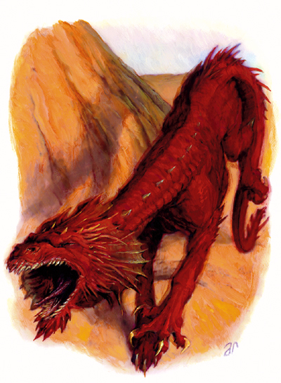

大型龙类
这只四足爬行的生物有着不符于其体型的迅敏行动和如猫般优雅。它暗红色的鳞片上布满了过去争斗留下的疤痕和裂纹，而它晦暗的表情表露出的是怒不可遏。

| 生命骰： | 14d12+84（175hp） |
| 先攻： | +7 |
| 速度： | 60英尺(12格) |
| 防御等级： | 20（-1体型，+3敏捷，+8天生），接触12，措手不及17 |
| 基本攻击／擒抱： | +21/+34 |
| 攻击： | 爪抓+20近战（1d8+13/19-20）* |
| 全力攻击： | 2爪抓+20近战（1d8+18/19-20）*以及啮咬+15近战（2d6+14）* |
| 面宽／触及： | 10英尺/5英尺 |
| 特殊攻击： | 精通擒抱，猛扑，狂暴，耙抓，撕咬 |
| 特殊能力： | 30英尺盲感，60英尺黑暗视觉，对睡眠和麻痹免疫，昏暗视觉 |
| 豁免： | 强韧+15，反射+12，意志+10 |
| 属性： | 力量27，敏捷17，体质23，智力4，感知12，魅力10 |
| 技能： | 躲藏+9，跳跃+31，聆听+15，潜行+13，侦察+15 |
| 专长： | 精通重击（爪抓），精通先攻，精通天生武器（爪抓），精通天生武器（啮咬），猛力攻击，大顺势斩 |
| 地域： | 寒冷森林 |
| 组织： | 单独或成双 |
| 挑战等级： | 9 |
| 宝物： | 无 |
| 阵营： | 通常混乱邪恶 |
| 进化： | 15-28HD（大型）；29-42HD（超大型） |
| 等级调整： | - |
*已包含猛力攻击专长的调整值
在原始类龙生物中，狂暴龙兽和那些巨大而危险的猛兽相比和真实的龙类之间有着更多的共通点。然而由于进化不足，狂暴龙兽依然在许多方面保留着兽性。残忍和自私，狂暴龙兽拥有着许多邪恶龙类的不良习性。有的贤者相信狂暴龙兽之所以被刻意制造出来，是为了寻求一种具有如同龙类般惊人肉体力量而不具有智慧和强力的魔法能力的坐骑。狂暴龙兽并不积蓄财宝，因为它们视这些珍贵的宝石为……快餐。
狂暴龙兽有着灰红色的鳞片以及和真实龙类一样猫科动物般的外表。和其他大部分类龙生物不同，它们没有翼。然而，它们的体型和力量使得它们和大部分陆地生物相比都快得多。标准的狂暴龙兽可以长到12英尺以上，重可达6,000磅。
狂暴龙兽不会言语，但凭着它们有限的智力可以理解通用语和龙语。
战斗
凭着本能的残忍的猎食者，狂暴龙兽会躲藏起来并在适当时机伏击它们的对手。除了这种本能的猎食技巧之外，狂暴龙兽还会以它们的残暴本性使用一些简单战术来战斗。在战斗开始时，狂暴龙兽会冲锋并猛扑最近的对手，用最快速度将它撕碎并转向下一个对手。它通常会尝试在第一轮扑击并震慑他的对手，然后在下一轮开始时进行狂怒。若在战斗中被击败，狂暴龙兽更可能会战斗到死而不是逃跑。
狂暴龙兽通常会使用猛力攻击专长攻击，在攻击掷骰上受到-5减值并在伤害掷骰上得到+5的加值。
猛扑（Ex）：狂暴龙兽在冲锋对手时依然可以进行全力攻击，如果它擒抱了对手，还可以进行两次耙抓攻击和一次撕咬攻击。
狂暴（Ex）：每天四次，狂暴龙兽可以进入一种狂怒的状态，持续11轮。狂暴效果持续时会发生如下改变：AC 18（接触10，措手不及15）；HP增加28；攻击+20近战（1d8+15/19-20，爪抓）；全回合攻击+20近战（1d8+15/19-20，2爪抓）以及+17近战（2d6+10，啮咬）；豁免 强韧+17，意志+15；力量31，体质27；跳跃+33。和野蛮人不同，狂暴龙兽在狂暴之后不会力竭。狂暴龙兽可以提早结束它的狂暴，然而它几乎不这么做――即使所有对手都已被击倒。
Rake(Ex):Attack bonus +16 melee,damage 1d8+13,including adjustment for using Power Attack feat.
耙抓（Ex）：攻击加值+16近战，伤害1d8+13，已包括了使用猛力攻击专长的调整。
撕咬（Ex）：当狂暴龙兽将比它体型至少小一级的对手擒抱到口中时，它会直接摇撼对手，使受害者震慑和晕迷。任何被狂暴龙兽擒抱的生物必须通过DC25的强韧豁免否则震慑1轮。狂暴龙兽只能在它擒抱住对手的首轮中使用此能力。该豁免DC基于力量。
技能：狂暴龙兽在侦查和聆听检定上有+4的种族加值。
炼狱狂暴龙兽
大型龙类
恶魔王子们通常会饲养一些强有力的炼狱种狂暴龙兽，并用于他们的深渊军队中。这些结合了龙类的暴虐与恶魔的韧性和活力的残暴怪物们比它们的原种表亲们更为可怕。
| 生命骰： | 21d12+147外加21（304hp） |
| 先攻： | +8 |
| 速度： | 60英尺(12格) |
| 防御等级： | 20（-1体型，+3敏捷，+8天生），接触12，措手不及17 |
| 基本攻击／擒抱： | +20/+34 |
| 攻击： | 爪抓+20近战（1d8+18/19-20）* |
| 全力攻击： | 2爪抓+20近战（1d8+18/19-20）*以及啮咬+15近战（2d6+14）* |
| 面宽／触及： | 10英尺/5英尺 |
| 特殊攻击： | 精通擒抱，猛扑，狂暴，耙抓，破善斩，撕咬 |
| 特殊能力： | 30英尺盲感，60英尺黑暗视觉，伤害减免10/魔法，对睡眠和麻痹免疫，昏暗视觉，抗寒10和抗火10，法术抗力26 |
| 豁免： | 强韧+19，反射+16，意志+12 |
| 属性： | 力量28，敏捷17，体质24，智力4，感知12，魅力10 |
| 技能： | 躲藏+14，跳跃+36，聆听+19，潜行+17，侦察+19 |
| 专长： | 顺势斩，精通重击（爪抓），精通先攻，精通天生武器（爪抓），精通天生武器（啮咬），强韧加强，猛力攻击 |
| 地域： | 寒冷森林 |
| 组织： | 单独或成双 |
| 挑战等级： | 13 |
| 宝物： | 无 |
| 阵营： | 通常混乱邪恶 |
| 进化： | 22-28HD（大型）；29-42HD（超大型） |
| 等级调整： | - |
*已包含猛力攻击专长的调整值
狂暴（Ex）：每天四次，炼狱狂暴龙兽可以进入一种狂怒的状态，持续12轮。狂暴效果持续时会发生如下改变：AC 18（接触10，措手不及15）；HP增加42；攻击+22近战（1d8+20/19-20，爪抓）；全回合攻击+22近战（1d8+20/19-20，2爪抓）以及+14近战（2d6+15，啮咬）；豁免 强韧+21，意志+14；力量32，体质28；跳跃+38。和野蛮人不同，炼狱狂暴龙兽在狂暴之后不会力竭。狂暴龙兽可以提早结束它的狂暴，然而它几乎不这么做――即使所有对手都已被击倒。
破善斩（Su）：每天一次，炼狱狂暴龙兽在对抗善良对手时可以以一个成功的近战攻击检定造成20点额外伤害。
狂暴龙兽坐骑
尽管由于过于聪明而无法用驯养动物技能来驯服，狂暴龙兽有时也会被收买或迫使作为坐骑为那些特别强大的骑手服务。驾驭狂暴龙兽，即使是有相当经验的人，也是很冒险的行为，骑手必须准备好应付狂暴龙兽试图夺取控制权或袭击骑手的情况。在狂暴状态中，操控坐骑会显得相当困难――期间所有骑术技能检定的DC都提升10。
作为坐骑的狂暴龙兽可以被训练作战斗用，这会耗费至少15,000金币。通常用于奖励食物、饮用，珍贵的宝石可以用来让狂暴龙兽开心而变得稍微老实些，狂暴龙兽的骑手若想要让这些野兽满意（或让一只狂暴龙兽变得和过去一样满意），每月需要在这生物身上耗费500至1500金币。
艾伯伦的狂暴龙兽
狂暴龙兽大量存在于在Argonnessen洲，栖息于海滨悬崖边的洞穴中。在Khorvaire大陆上存在着数量更为惊人的狂暴龙兽，和翼龙们争夺地盘。Longships of the Lhazaar Principalities时常能找到类似狂暴龙兽的头部雕刻，这些生物在Khorvaire的东部海岸被广泛地猎取、崇拜和畏惧着。Argonnessen的野蛮人部落使用狂暴龙兽作为坐骑。
费伦的狂暴龙兽
狂暴龙兽居住在Unapproachable East偏远山脉的各处，大多数出没在Narfell的Giantspire山脉和Thesk的Dragonjaw山脉以及Aglarond。被奴役的狂暴龙兽们通常为Thay的各Red Wizard们服务。Shiertalaran商人们也流传过Wyrmbones的狂暴龙兽会袭击Kormul城附近的车队和Talar河流域的船只。